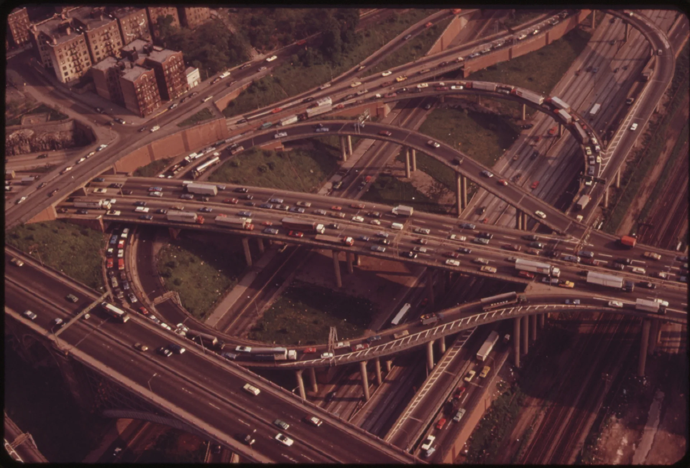
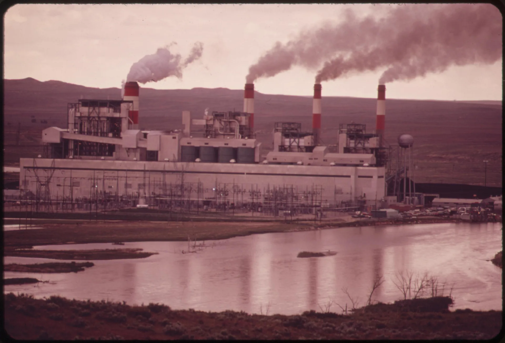
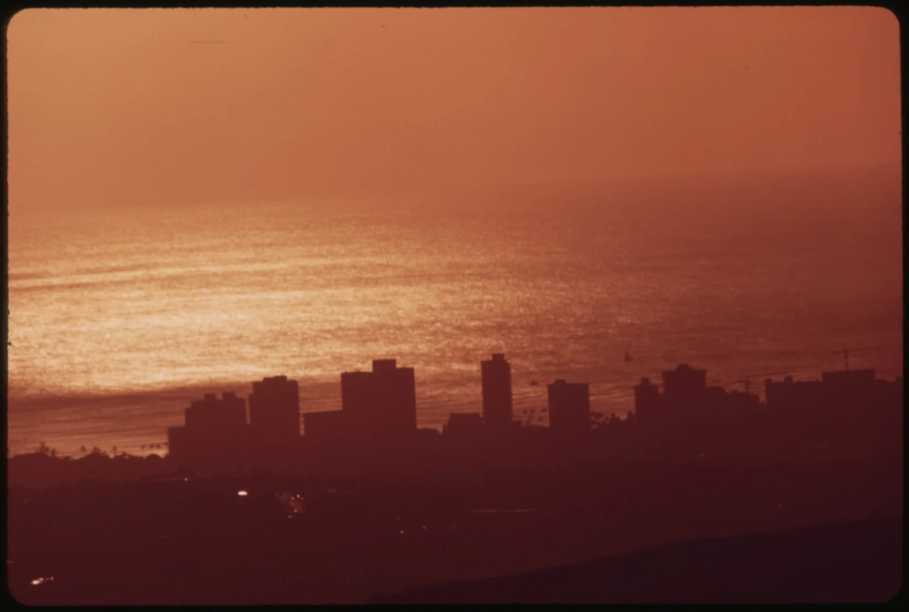

国策 · NATION / STATE影像来源 Photo credits
新世界开场采用以下真实档案照片作为时代氛围素材。照片中的地点与游戏生成的虚构国家分别记录。
The new-world montage uses these archival photographs as period imagery. Their real locations are documented below, separately from the game's fictional countries.

城市交通 / Urban transport
Traffic interchange system on the Cross Bronx Expressway
Chester Higgins Jr. · 1973年5月 / May 1973 · New York
U.S. National Archives / EPA DOCUMERICA · NAID 548333 · Public domain (PD-USGov-EPA).
原始照片及权利说明 / Source and rights
工业设施 / Industry
The Dave Johnston Power Plant
Boyd Norton · 1973年6月 / June 1973 · Wyoming
U.S. National Archives / EPA DOCUMERICA · NAID 549215 · 412-DA-6729. Archive record: access and use unrestricted; Flickr Commons: no known copyright restrictions.
原始照片及权利说明 / Source and rights
城市远景 / City skyline
City skyline against the afternoon sun
Charles O'Rear · 1973年10月 / October 1973 · Honolulu
U.S. National Archives / EPA DOCUMERICA · NAID 553788 · Public domain (PD-USGov-EPA).
原始照片及权利说明 / Source and rights处理：缩小并转换为 WebP；播放时进行画幅裁切、轻微色调调整、缓慢缩放和交叉淡入。照片保留原始画面内容。
Presentation changes: resized and encoded as WebP; viewport cropping, subtle color adjustment, slow zoom and crossfades during playback. The original scene content is retained.

.jpg){kind=link}